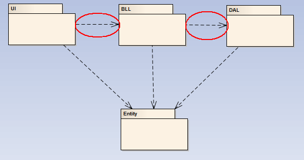
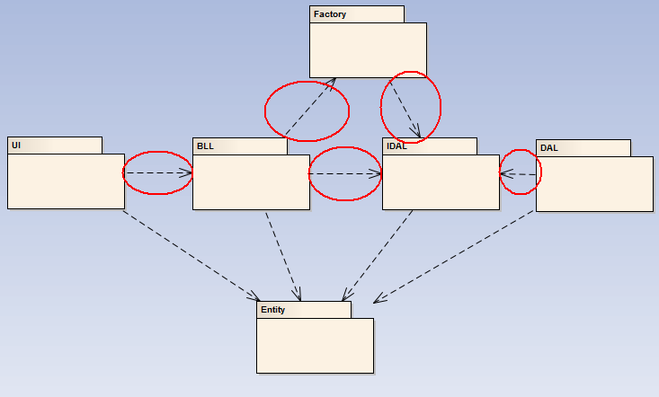

目录视图
目录视图 摘要视图
摘要视图 订阅
订阅版权声明：本文为博主原创文章，未经博主允许不得转载。
面向对象开发中，大家都熟知三层架构，也经常使用三层架构思想。我们都知道，三层架构主要就是讲解一个分层思想。经典的三层架构主要分为三层：UI表现层，BLL业务逻辑层、DAL数据访问层。
我们先搞懂每个层到底有哪些职责：
UI：展现给用户的界面，用户在使用一个系统的时候他的所见所得；如果逻辑层相当强大和完善，无论表现层如何定义和更改，逻辑层都能完善地提供服务；
BLL：业务逻辑层，针对具体问题的操作，也可以说是对数据层的操作，对数据业务逻辑处理；如果说数据层是积木，那逻辑层就是对这些积木的搭建；
那又为什么要分层呢？分层当然是为了解耦。在经典三层架构中讲到，系统要将业务逻辑与数据访问分开，表现层与业务逻辑分开。
三层架构就像是牛顿第二定律一样，表面看去都非常简单，没有什么特别之处，但是它们的意义都是非常伟大的。F=ma将运动与力联系起来了。在没有牛顿第二定律之前，力与运动完全是两个领域，人们因为不知道，而不知道他们之间的联系。而有了牛顿第二定律，人们就可以通过速度，来研究物体的受力；当然也可以通过受力，来控制物理的运行速度。这在历史上具有划时代的意义。
三层架构，表达的是一种分层思想。实际上，经典的三层架构并没有实现完全的解耦。因为UI层中需要对业务逻辑层添加引用，在BLL层中需要对数据访问层添加引用。由于层与层之间有着强烈的引用关系。
PS：关于引用，我们可以这样认为：引用了，就是自己的了。那刚刚说过的三层架构来说，因为BLL层添加了DAL层的引用，那么BLL层就把DAL当自己人了，DAL里面的东西，只要定义成公有的，它全认识；同理，由于UI层引用了BLL层，UI层也把BLL层当做自己人。分层本来是为了解耦，可是层与层之间的引用关系，决定了UI层与DAL层之间也就有着强引用关系。有引用就不能实现解耦。

上面包图可见，UI与DAL存在顺方向的引用关系，故UI与DAL是一家人。
所以尽管三层架构表达的是一种架构思想，但是它并没有实现真的解耦。经典的三层架构，与过去的面向过程开发相比，进步之处就在于它体现着一种分层思想。
为了达到我们的目的，我们在应用的时候必须对三层架构作出改进，所以我们在网上查资料的时候，大家所说的三层架构其实是多层。以三层架构为基础，为系统进行扩展。
一般情况下，我们都会为系统使用简单工厂+反射。下面看扩展后的包图：

我们可以看出，改进后的包图关系中，UI中没有对DAL进行间接的引用。也就是说，改进后，UI没有通过中间的BLL，IDAL，Factory认识DAL，UI根本不认识DAL。在UI的家谱中根本没有DAL这一号。这样一来，系统的灵活性就大了，DAL我们就可以随便换了。
具体操作的时候，我们只需要更改一下字符串，为DAL层换一个名字，比如之前DAL层我们用的是AccessDAL，那么我们完全可以更换成SqlServerDAL，而这些更改，完全可以在配置文件里面完成。然后我们只需要在UI下面的bin文件夹下面的Debug文件夹里面，添加进来SqlServerDAL就可以了。原先的AccesssDAL我们可以删除，也可以不去管它。
我们之所以可以这样做，就是因为我们使用了简单工厂+反射，降低了层与层之间的联系。由于不同的名字会生成不同的dll文件，我们用的时候，我们只是根据文件的名字调用相应的dll文件。
讲到这里，大家一定会想知道，上面谈到的两种方法，最大的区别是啥呢？我们对比三层架构引用关系和使用简单工厂＋反射关系的实例来说明。
对于引用关系，我们可以进一步进行理解：
如果两层之间没有添加引用，比如DAL，它没有引用任何层，那么编译之后DAL会自生成dll文件到DAL下面的bin文件夹下面的Debug文件夹下。
假如现在BLL引用了DAL层，那么在BLL下面的bin文件夹下面的Debug文件夹下面会有DAL.dll和BLL.dll两个文件。也就是说，BLL引用DAL，DAL会自动复制一份dll到BLL的bin文件夹下面的Debug下面。这就是实质的引用关系。
在此需要进行对比说明，上面提到的简单工厂+反射在编码的时候，会提示错误：找不到dll文件。因为他们不认识，所以出现找不到的错误也应该是正常的。这时我们需要手动修改DLL文件的生成路径，强行将DAL的生成路径改为UI下面的bin下面的Debug文件夹下面，如此，程序便可正常运行了。
那么，使用抽象工厂+反射的修改DAL的生成路径方法与经典三层架构添加引用方法有什么区别呢？
前者因为已经生成好，我们需要根据DAL名称获取相应的DAL之后，系统就可以按照您的需要正常运行了；而后者由于添加了引用关系，我们必须改动源程序，对程序重新编译，重新生成，程序才能够运行。
上文主要站在理解架构的角度讲三层架构，而对于业务逻辑层的架构和编写，也是非常有意思的。到目前为止，我认为比较好的处理是BLL层尽一起努力进行逻辑处理，并向上抛出异常，UI层进行捕获；我们也可以添加一个异常实体类，里面定义两个字段，一个bool，用于判断是否有异常，用于返回；另一个string，用于定义和显示异常。
本文谈到经典的三层架构、以及它的分层思想、为什么要分层、为什么要解耦、怎样解耦的问题。最后隐射到抽象工厂+反射的三层架构怎样淋漓尽致的发挥分层思想，以及两者之间对比，和他们的异同。到文章最后，简短的谈到了BLL业务逻辑层的处理。
就说这些吧。我是尽力的来表述了。我有了新的体会心得，会即时在这里更大家分享的。路过的你们希望留下宝贵意见。有疑义的同学也可以跟我一起讨论、共同进步。
- 顶
- 67
- 踩
- 7
- 上一篇朝阳医院项目总结
- 下一篇自学考试——信息系统开发与管理


我应该先从哪入手啊？
这些都是指导性方针，作为方针来讲还是很有意义的，但实际情况要复杂得多。而三层架构也算不上“精髓”， 只不过是对SRP原则的一个演绎而已。 但职能并不一定总要按PBD的方向来分。
public String execute(Args arg) { sql = 'insert into ...'; Util.insert(sql,.......); sql = 'update table ...'; Util.update(sql,.......); sql = 'select table ...'; Util.select(sql,.......); //。。。。 }ui 层 与 bl层的通信接口， bl层与数据层的通信 接口。
甚至可以再层与层之间在拆分几个层，重要的是，层层之间不可越层，这样就可以 分而治之。细度越小，以后替换更方便。更有效。这是从大的软 件框架来说的。就像7层网络架构一样。每层只负责上下层的通信。从小的方面来说，现在的可视化编程都实现了 所谓的3层结构。那天我发布个我写的实现三层架构 （ui层 即所谓的客户端，通信层、业务层、数据层一般都是现成的数据库）主要是通信层、和 业务层
-------------
分层是一种架构设计方法/模式，和面向对象没什么亲缘关系。
面向对象讲究的是通过数据封装、抽象、泛化/特化、多态等方法来实现对领域模型的建模、解耦。
米老师
OO要解决的是对处理的信息如何描述和处理，
三层架构解决的是应用逻辑设计，
二者不搭界。
用工厂也有缺点，因为上层对工厂类又产生了新的耦合，它除了要知道接口，还要知道工厂，而原来直接耦合的时候是没有工厂的。
关于解耦，我个人观点是耦合是永远不会消失的，因为耦合是逻辑上的，逻辑没变，代码组织结构再怎么变也没用。通常说的解耦，其实只不过是把耦合转移和独立出来（比如转移到XML配置文件里），方便进行专门的耦合管理罢了。
另外，分层和OO并没有必然联系。
---------------------------------------------------------------------------
不明白，DAL可以随便换是什么意思。。。难道每个项目的DAL都是一样的？
文章从各方面来说都很好,内容质量和博文格式.等.
顶一个!